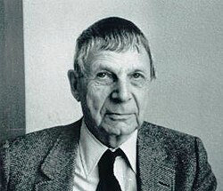

This article needs more citations. (April 2020) |
Lars Ahlfors | |
|---|---|
 Lars Ahlfors | |
| Born | 18 April 1907 |
| Died | 11 October 1996 (aged 89) |
| Alma mater | University of Helsinki |
| Known for | Analytic capacity Riemann surfaces Quasiconformal mappings Denjoy-Carleman-Ahlfors theorem Ahlfors finiteness theorem for Kleinian groups Ahlfors theory Conformal geometry Geometric function theory |
| Awards | Fields Medal (1936) Wihuri Prize (1968) Wolf Prize (1981) Leroy P. Steele Prize (1982) |
| Scientific career | |
| Fields | Mathematics |
| Institutions | Åbo Akademi University of Helsinki ETH Zurich Harvard University |
| Ernst Lindelöf Rolf Nevanlinna | |
Doctoral students | Paul Garabedian Dale Husemoller James A. Jenkins Albert Marden Robert Osserman Henry Pollak Halsey Royden George Springer |
{kind=link}
Lars Valerian Ahlfors (18 April 1907 – 11 October 1996) was a Finnish mathematician and the leading figure in complex analysis during the 20th century. He is remembered for his work on Riemann surfaces, quasiconformal mappings and Teichmüller spaces, and for his textbook on complex analysis. In 1936 Ahlfors was one of the first two recipients of the Fields Medal, along with American mathematician Jesse Douglas, and in 1981 he received the Wolf Prize in Mathematics.[1]
Biography
Early life and education
Ahlfors was born in Helsinki, Finland.[2][3] His mother, Sievä Helander, died at his birth. His father, Karl Axel Mauritz Ahlfors, was a professor of engineering at the Helsinki University of Technology.[1] The Ahlfors family was Swedish-speaking, so he first attended the private school Nya svenska samskolan where all classes were taught in Swedish. Ahlfors studied at the University of Helsinki from 1924, graduating in 1928 having studied under Ernst Lindelöf and Rolf Nevanlinna.[2] In the autumn of 1928 he travelled with Nevanlinna to Zurich, where Nevanlinna had been invited to fill a vacant professorship at the Swiss Federal Institute of Technology. Ahlfors later emphasised the importance of this journey, which brought him from the periphery of Europe to its mathematical centre.[1] He assisted Nevanlinna with his work on Denjoy's conjecture on the number of asymptotic values of an entire function, and in 1929 published the first proof of this conjecture, now known as the Denjoy–Carleman–Ahlfors theorem.[4] He completed his doctorate from the University of Helsinki in 1930.
Academic career
Ahlfors began his academic career at Åbo Akademi and was appointed associate professor of mathematics at the University of Helsinki in 1933.[1] In 1935–1936 Ahlfors was a visiting researcher at Harvard University.[1] In 1936 he was one of the first two people to be awarded the Fields Medal[2][3] (the other was Jesse Douglas). The prize committee noted that Ahlfors was one of the most brilliant representatives of the Finnish school of function theory founded by Ernst Lindelöf, which over thirty years had made many valuable contributions to mathematics and produced so many outstanding mathematicians.[1] When offered an associate professorship at Harvard, he left his position at the University of Helsinki in autumn 1936. He returned to Finland in 1938 to take up a Swedish-language professorship in mathematics at the University of Helsinki.[1]
War years and emigration
The outbreak of war in 1939 led to problems although Ahlfors was unfit for military service. He sent his family to Sweden and continued to fulfil his professorial duties at the university. Foreseeing difficult times ahead for Finland in the summer of 1944, he indicated his wish to move to Zurich and joined his family in Sweden to await developments.[1] He was offered a position at the Swiss Federal Institute of Technology at Zurich and finally managed to travel there in March 1945, at which point he resigned his professorship in Helsinki.[1] He did not enjoy his time in Switzerland, so in 1946 he accepted a professorship at Harvard, where he remained until his retirement in 1977;[2][3] he was William Caspar Graustein Professor of Mathematics from 1964. Ahlfors was a visiting scholar at the Institute for Advanced Study in 1962 and again in 1966.[5] He was awarded the Wihuri International Prize in 1968 and the Wolf Prize in Mathematics in 1981, whose citation concluded that every function theorist active at the time was in some measure a student of Ahlfors.[1] He served as the Honorary President of the International Congress of Mathematicians in 1986 at Berkeley, California, in celebration of his 50th year of the award of his Fields Medal.[1]
Mathematical contributions
Throughout his career Ahlfors made decisive contributions to several areas of complex analysis. Among his earliest results was the proof of the Denjoy–Carleman–Ahlfors theorem, which states that the number of asymptotic values approached by an entire function of order ρ along curves in the complex plane going toward infinity is less than or equal to 2ρ. His book Complex Analysis (1953) is the classic text on the subject and is almost certainly referenced in any more recent text which makes heavy use of complex analysis. Ahlfors wrote several other significant books, including Riemann surfaces (1960)[6] and Conformal invariants (1973). He made decisive contributions to meromorphic curves, value distribution theory, Riemann surfaces, conformal geometry, quasiconformal mappings and other areas during his career.
In 1954 Ahlfors proved that the results and conjectures of Oswald Teichmüller — whose pioneering work on Riemann surfaces had been cut short when he disappeared on the German Eastern Front in 1943 — were correct. In doing so he defined the concept of Teichmüller space, which rapidly became an important field of research within function theory and later acquired significance in physics as well. His work made the theory of quasiconformal mappings a central area of complex analysis, and by the year 2000 this theory was assessed as perhaps the most important advance in function theory during the 20th century.[1]
Personal life
In 1933, he married Erna Lehnert, an Austrian born in Vienna who with her parents had first settled in Sweden and then in Finland.[1] The couple had three daughters. Ahlfors died of pneumonia at the Willowwood nursing home in Pittsfield, Massachusetts in 1996.[2][3]
See also
- Ahlfors finiteness theorem
- Ahlfors function
- Ahlfors measure conjecture
- Beurling–Ahlfors transform
- Schwarz–Ahlfors–Pick theorem
- Measurable Riemann mapping theorem
Bibliography
Articles
- Ahlfors, Lars V. An extension of Schwarz's lemma. Trans. Amer. Math. Soc. 43 (1938), no. 3, 359–364. doi:10.2307/1990065
- Ahlfors, Lars; Beurling, Arne. Conformal invariants and function-theoretic null-sets. Acta Math. 83 (1950), 101–129. doi:10.1007/BF02392634
- Beurling, A.; Ahlfors, L. The boundary correspondence under quasiconformal mappings. Acta Math. 96 (1956), 125–142. doi:10.1007/BF02392360
- Ahlfors, Lars; Bers, Lipman. Riemann's mapping theorem for variable metrics. Ann. of Math. (2) 72 (1960), 385–404. doi:10.2307/1970141
- Ahlfors, Lars Valerian. Collected papers. Vol. 1. 1929–1955. Edited with the assistance of Rae Michael Shortt. Contemporary Mathematicians. Birkhäuser, Boston, Mass., 1982. xix+520 pp. ISBN 3-7643-3075-9
- Ahlfors, Lars Valerian. Collected papers. Vol. 2. 1954–1979. Edited with the assistance of Rae Michael Shortt. Contemporary Mathematicians. Birkhäuser, Boston, Mass., 1982. xix+515 pp. ISBN 3-7643-3076-7
Books
- Ahlfors, Lars V. Complex analysis. An introduction to the theory of analytic functions of one complex variable. Third edition. International Series in Pure and Applied Mathematics. McGraw-Hill Book Co., New York, 1978. xi+331 pp. ISBN 0-07-000657-1[7]
- Ahlfors, Lars V. Conformal invariants. Topics in geometric function theory. Reprint of the 1973 original. With a foreword by Peter Duren, F. W. Gehring and Brad Osgood. AMS Chelsea Publishing, Providence, RI, 2010. xii+162 pp. ISBN 978-0-8218-5270-5
- Ahlfors, Lars V. Lectures on quasiconformal mappings. Second edition. With supplemental chapters by C. J. Earle, I. Kra, M. Shishikura and J. H. Hubbard. University Lecture Series, 38. American Mathematical Society, Providence, RI, 2006. viii+162 pp. ISBN 0-8218-3644-7
- Ahlfors, Lars V. Möbius transformations in several dimensions. Ordway Professorship Lectures in Mathematics. University of Minnesota, School of Mathematics, Minneapolis, Minn., 1981. ii+150 pp.
- Ahlfors, Lars V.; Sario, Leo. Riemann surfaces. Princeton Mathematical Series, No. 26 Princeton University Press, Princeton, N.J. 1960 xi+382 pp.
References
- ^ a b c d e f g h i j k l m "Lars Ahlfors". Biografiskt lexikon för Finland (in Swedish). Helsingfors: Svenska litteratursällskapet i Finland. urn:NBN:fi:sls-5313-1416928957919.
- ^ a b c d e "Lars V. Ahlfors, Mathematician Who Won First Fields Medal; 89". The Boston Globe. Boston, MA. October 17, 1996. p. 87. Retrieved August 14, 2022 – via Newspapers.com.

- ^ a b c d "Lars Ahlfors, Leading Mathematician in Complex Analysis, Dies at 89". The Fresno Bee. Fresno, CA. October 23, 1996. p. 42. Retrieved August 14, 2022 – via Newspapers.com.
- ^ Ahlfors, Lars Valerian (2015-12-08). Analytic Functions. Princeton University Press. ISBN 978-1-4008-7670-9.
- ^ "A Community of Scholars". Institute for Advanced Study. Retrieved August 14, 2022.
- ^ Springer, George. "Review of Riemann surfaces. By Lars V. Ahlfors and Leo Sario" (PDF). Bull. Amer. Math. Soc. 67 (2): 170–171. doi:10.1090/S0002-9904-1961-10548-X.
- ^ Schaeffer, A. C. (1953). "Review: Complex analysis. By Lars V. Ahlfors" (PDF). Bull. Amer. Math. Soc. 59 (5): 464–467. doi:10.1090/S0002-9904-1953-09722-1.
External links
 Media related to Lars Ahlfors at Wikimedia Commons
Media related to Lars Ahlfors at Wikimedia Commons- Lars Ahlfors at the Mathematics Genealogy Project
- Ahlfors entry on Harvard University Mathematics department web site.
- Papers of Lars Valerian Ahlfors : an inventory (Harvard University Archives)
- Lars Valerian Ahlfors The MacTutor History of Mathematics page about Ahlfors
- The Mathematics of Lars Valerian Ahlfors, Notices of the American Mathematical Society; vol. 45, no. 2 (February 1998).
- Lars Valerian Ahlfors (1907–1996), Notices of the American Mathematical Society; vol. 45, no. 2 (February 1998).
- Frederick Gehring (2005). "Lars Valerian Ahlfors: a biographical memoir" (PDF). Biographical Memoirs. 87.
- National Academy of Sciences Biographical Memoir
- Author profile in the database zbMATH